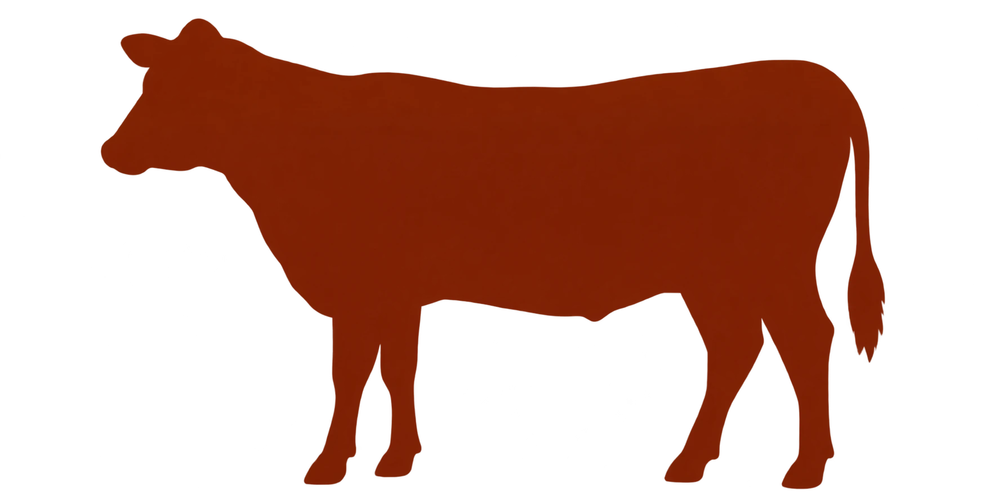

和牛
01 / The word
What does “Wagyu” mean?
“WAGYU”—properly pronounced waa-gyew—literally means “Japanese cow.” Wa means Japanese, and gyu means cow.
Wa + gyu = Japanese cowFrom Japan’s four cattle strains to a breed known around the world for its marbling, adaptability, and remarkable history.
↓ Scroll to exploreWagyu’s story spans Japanese regional cattle, generations of selective breeding, a small number of exports, and producers who carry those bloodlines forward around the world.
“WAGYU”—properly pronounced waa-gyew—literally means “Japanese cow.” Wa means Japanese, and gyu means cow.
Wa + gyu = Japanese cow

Wagyu refers to four major strains of cattle improved through crossbreeding with non-Japanese cattle during a short period from about 1867 to 1910.

Japanese BrownRed Wagyu · AkaushiJapanese Brown is commonly called Red Wagyu outside Japan; some also use Akaushi, meaning “red cow.” Only Japanese Black and Red Wagyu have been exported from Japan. Each strain contains multiple bloodlines. Across prefectures, relative isolation and local selection produced different characteristics, though Wagyu bloodlines remain related through their native Asian cattle ancestry. Outside Japan there are four major strains—three Black and one Red—and Wagyu are a horned breed with either black or red coats.

Regional isolation and selective breeding gave rise to distinct characteristics. Within Japanese Black, three influential bloodlines are commonly discussed: Tajima, Fujiyoshi, and Kedaka.
Associated with the sire Tajiri, born in 1939 in the Mikata District. Tajima cattle were traditionally used to pull carts and ploughs. Tajima is a major, influential sire line, and nearly all Hyogo bloodlines are related to it; animals may also be called Tajiri. The line is generally regarded in Japan as producing the best meat quality. Tajima cattle are typically smaller, slower-growing, and frailer than other Black strains. All Japanese Black lines were crossed to some degree during the improvement period, but Tajima was less influenced than the other three lines. Its large eye muscle, superior marbling, and excellent temperament helped make this the Wagyu strain associated with Kobe beef. The cart-pulling work also favored larger forequarters and lighter hindquarters.
Linked to Dai 13 Hanayoma and later influential sires such as Dai 7 Itozakura. Fujiyoshi began with Dai 13 Hanayoma in Okayama and later spread to other prefectures. Dai 7 Itozakura, born in Shimane, is probably its best-known sire; many Fujiyoshi Wagyu outside Japan descend from him, which is why this line is also called Shimane. The cattle are medium framed, with average growth rates among the Black strains, good maternal qualities, fertility, and meat quality.
Historically selected as pack animals. Kedaka began in Tottori and is also called Tottori. It was bred as a pack animal, a selection believed to have produced a larger frame, a straight, strong topline, and generally good growth. Meat quality is more variable than in Tajima, while milking ability is better than in the other two Black lines.
Japanese Brown are called Red Wagyu outside Japan, and some refer to them as Akaushi—“red cow.” They originated primarily in Kumamoto on Kyushu, where range grazing was more common than confinement.
Red Wagyu are substantially different from the three Black strains. They are also called Kumamoto Red and are red-hided cattle originating mainly in Kumamoto, on Kyushu in southwestern Japan, where range grazing has been more common than confinement. The bloodline is believed to trace through ancient Asian cattle to red Korean breeds such as modern Hanwoo. Japan’s improvement program introduced European influence, primarily Simmental and Devon; some reports also identify Korean Hanwoo in the crosses. Red Wagyu average larger, faster-growing, thicker, and heavier than the three main Black strains, and many have excellent meat quality.
Kumamoto · Kyushu · Red Wagyu
Japanese Polled and Japanese Shorthorn are two smaller strains that have not been exported, according to the TWA article. Both are minor strains, make up a very small share of Japan’s Wagyu herd, and have not been exported. They were heavily influenced by crossing European breeds with native Japanese cattle between 1868 and 1910.

Wagyu were originally draft animals used in Japanese agriculture and selected over a long period for physical endurance. Selection for good draft animals over generations favored animals with more intramuscular fat cells. This intramuscular fat—what the beef industry calls marbling—provided a readily available energy source, helping cattle release large bursts of energy for work. Wagyu evolved separately from other major Bos taurus lines. This long selection for work, alongside an intensive Japanese government-led breeding management program in the 20th century, helped shape the breed known around the world for a distinctive culinary experience.
Later, Japan’s organized breeding management, alongside the breed’s distinct development, helped shape the cattle known today for highly marbled beef.
Purpose shaped the animal.
The TWA article says 221 Wagyu animals are known to have been exported from Japan between 1976 and 1997: 167 Black Wagyu live animals and 16 Red Wagyu live animals, plus 21 and 6 calves respectively, sired by Japanese bulls after the females arrived. After these exports, the Japanese government declared Wagyu a national treasure and banned further exports of cattle and genetics.
The export window described in the TWA article.
After the 183 original live animals and their calves were in the U.S., genetics spread from the U.S. to Australia, Canada, and other countries. The source says registered Wagyu outside Japan trace back to those original exported genetics.
Source note: The four listed subgroups (167 + 21 + 16 + 6) add to 210, although the article gives 221 as the total. We preserve the source’s wording and flag the numerical mismatch for confirmation.

Wagyu is celebrated for tender, highly marbled beef. The source article describes its fat as having a low melting point, creating the familiar “melts in your mouth” impression. It also notes a higher ratio of monounsaturated to saturated fatty acids than beef from other breeds.
Fine flecks within the muscle are what the industry calls marbling.

Wagyu are genetically predisposed to produce excellent beef—tender, highly marbled, and known for low-melting-point fat that gives a “melts in your mouth” quality. The source article also says Wagyu beef has a higher ratio of monounsaturated to saturated fatty acids than beef from other breeds. Wagyu calves have very low birth weights; cattle grow and mature more slowly and adults are somewhat smaller than most European breeds.
The article describes Wagyu as having wonderful dispositions, breeding earlier and living longer than European breeds, and adapting to a wide range of climates and terrain. Bulls are known for exceptional fertility and strong libido, allowing one bull to breed more cows than is typical of other breeds; a mature Wagyu bull may breed a herd of up to 50 cows.
Different strengths. Shared heritage.From regional Japanese strains and working cattle to producers raising Wagyu across the world, the story continues with the people who steward the breed and its genetics.
Explore TWA resourcesPhotographs are sourced from Wikimedia Commons and used under the licenses shown in captions. The cattle silhouettes are presented without embedded labels; strain names are set as text on the page.